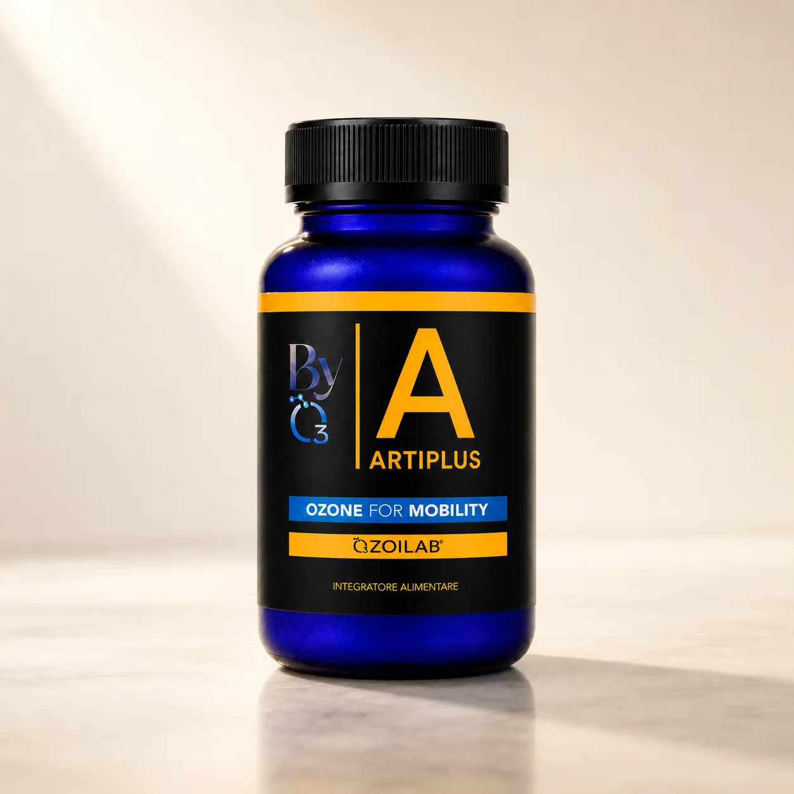
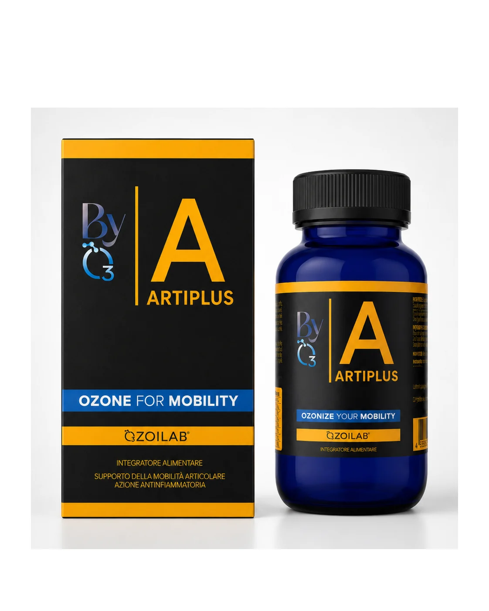
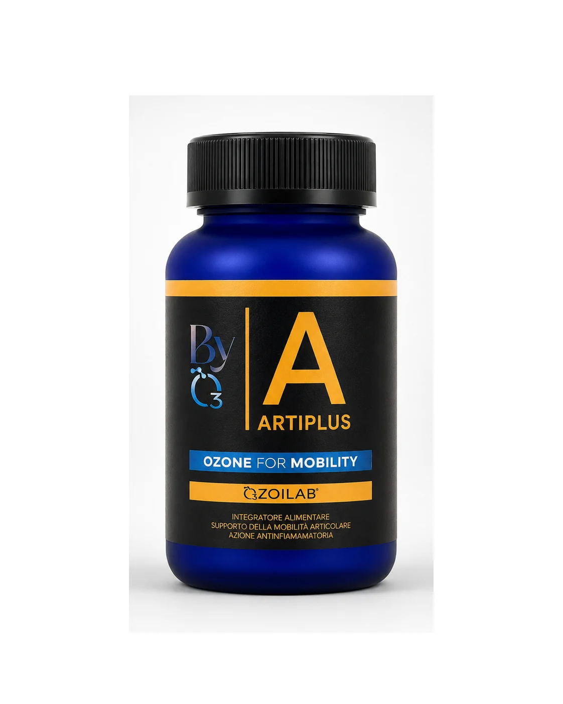
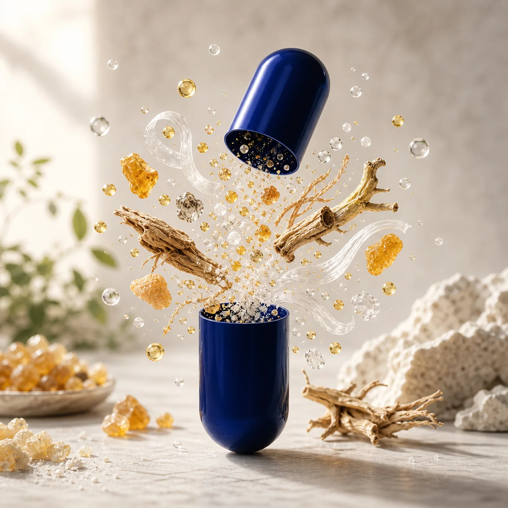

Struttura
Glucosammina, condroitina e collagene VERISOL® nella logica articolare.




Ozone for Mobility
Una formula multi-target per protezione e mantenimento della funzionalità osteoarticolare, elasticità e flessibilità.
Glucosammina, condroitina e collagene VERISOL® nella logica articolare.
Boswellia e Artiglio del diavolo completano il profilo multi-target.
100 mg di olio di girasole ozonizzato stabilizzato per dose giornaliera.
Una confezione mensile per una routine semplice.
Artiplus unisce componenti strutturali, fitocomposti e OZOILAB® per un approccio articolare completo.
La pagina rende leggibile la formula multi-target: strutturale, fitocomposta, redox e di routine.
In caso di allergie, terapie o condizioni specifiche, chiedere un parere professionale prima dell'assunzione.
2 capsule al giorno, con o senza cibo.
Uso continuativo dentro una routine mensile.
Contiene pesce. Non indicato in caso di deficit G6PD/favismo.